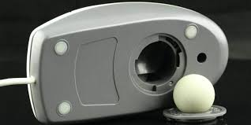

Trabajo Sitio Web (Ratón)
Funcionamiento del ratón
El funcionamiento del ratón depende del tipo de tecnología que use:
Ratón laser
Usa una luz láser en el sensor la cual rebota en la superficie, a través de la lente que magnifica la luz reflejada.
Ratones ópticos
la luz LED se emite hacia la ventana del ratón que está al descubierto con la superficie de contacto sobre la que se desliza. esta luz es reflejada en esta superficie y atraviesa una lente hasta llegar al sensor. Esta información es luego enviada al ordenador para que sea procesado.

Ratones de bola
La bola que tiene por sensor gira por sí misma al ser el ratón desplazado y activa unos rodillos que reconocen el movimiento para que se mueva el cursor por la pantalla.
Daniel García Campoy 1ºDAM